Case study · Personal project, extends my HCP internship work · 2025
Axiora Data
An analytics platform for the socio-economic indicators of the Souss-Massa region, built on open data published by Morocco's High Commission for Planning (HCP).
This page documents how the platform was built: how the data got into it, how it was checked after the fact and what that check found, how statistical tables were joined to geographic boundaries, and what the forecasting module does and does not claim.
Context
Morocco's High Commission for Planning publishes a large volume of territorial statistics: census results, poverty and vulnerability rates, labour market indicators, housing, education, health and local finance. The data is public and detailed, but it is distributed as PDF documents and raw spreadsheets.
That format makes some questions expensive to answer. Comparing a province across three census years, or ranking communes by poverty rate, means opening several files, reconciling inconsistent labels and rebuilding the same tables by hand each time. The information exists; reaching it is the obstacle.
For Axiora Data I transcribed a selection of these tables by hand into Python, and the app exposes them through a single interface where an indicator can be filtered, mapped, compared across years and extrapolated. It covers six domains (population, labour, housing, finance, education and poverty) for the Souss-Massa region.
What the platform does
- Explores indicators by year, province and commune, with year-on-year variation
- Renders choropleth maps of poverty and vulnerability at province and commune level
- Projects indicator trends forward using linear regression
- Answers questions in natural language, constrained to the loaded dataset
- Generates a formatted PDF report from any selected dataset
Architecture
The application is a single Streamlit process. The data lives in the source code as Python dictionaries, and everything downstream reads from memory.
- Sources: HCP regional publications for Souss-Massa, by province and commune, covering 2004 to 2020 depending on the indicator.
- Transcription: tables typed by hand into Python dictionaries, in
hcpdata.pyand inline in each module ofapp.py. - Validation:
validate_data.pychecks table lengths, totals against their parts, missing values and map joins (added after a review, see below). - Analysis: KPIs, year-on-year variation, top and bottom rankings computed on demand.
- Visualisation: interactive charts with Plotly; choropleth maps with GeoPandas.
- Trend projection: linear regression fitted on the full observed series and extrapolated (scikit-learn); no held-out evaluation, see the limitations of that module.
- Assistant and reporting: Gemini API for question answering, fpdf for report generation.
Holding the data in memory keeps the interface responsive and gives the assistant
one structure to work from. The cost is that the same table can exist in two
places (hcpdata.py and a module of app.py), and every
correction has to be made in both.
Data and checks
How the data got into the app
HCP publishes the regional statistics for Souss-Massa as tables in PDF yearbooks
and spreadsheets. I did not write an importer: I typed the tables I needed into
Python dictionaries, by domain, then by table, then by column. About 2,700 values
in hcpdata.py, several of the same tables a second time inside the
modules of app.py.
- Poverty and vulnerability: rates by commune for the five provinces and prefectures covered, 2004, 2007 and 2014
- Population: RGPH 2004 and 2014, annual estimates 2016 to 2018, age groups, households, administrative division
- Labour market: activity, employment and unemployment by age, sex, education and setting, 2017 to 2020
- Housing, finance, education: provincial tables for 2017 and 2018
Hand transcription fails silently. A skipped cell does not raise an error: it shifts every value below it by one row, and the chart still draws. A missing figure typed as 0 becomes a 0 % poverty rate on the map. I did not check the tables when I built the app, and a later review of the project found exactly these errors.
Checking the tables
validate_data.py parses the dictionaries without running the app and
applies four checks that HCP tables make possible, because they carry their own
totals:
- Shape: every column of a table has the same number of values
- Totals: Urbain + Rural = Total, Hommes + Femmes = Total, and the regional row equals the sum of the provinces (rates excluded)
- Missing values: no rate equal to 0 where 0 is implausible
- Map joins: every province and commune name reaches a polygon in the shapefile
The first run reported 66 errors. What was corrected, from the script and from going through every view of the app:
- The Souss-Massa row of the 2016 to 2018 population estimates had 2016 and 2017 swapped, urban and rural swapped, and a digit error in 2018. The province rows are internally consistent, so the regional row was rebuilt from them.
- RGPH 2004 urban population of Chtouka-Aït Baha read 239,694, more than the province's municipalities plus every commune that has an urban centre (140,562 in the HCP commune sheets). With 39,694 the provinces add up exactly to the published regional figure. No HCP sheet gives the urban figure directly, so this one is inferred.
- One unemployment figure (regional, aged 35 to 44) did not match its urban and rural parts or its row total.
- Inezgane-Aït Melloul never appeared on the province maps (details under Geographic mapping).
- Missing poverty rates for 2004 and 2007 had been typed as 0; they are now empty.
- Some part-of-whole charts counted the total as a part: the households pie chart included the regional row, always half the pie, and the sector and employment-status charts offered "Total" as one more slice. A pie chart of employment rates, which do not add up, was removed.
Four tables could not be repaired from their own totals, because the right value was not recoverable without the source. I re-entered them from the publications of the HCP Souss-Massa directorate, and checked the poverty tables of all six provinces column by column against the HCP sheets while doing so:
- Poverty by commune. Taroudannt's 2004 vulnerability column had lost one value near the end, so its last communes carried their neighbours' rates. Drargua's poverty rates were shifted by one year: the app gave 26.2 % for 2014, the HCP figure is 8.86 %. Two Tata values were also wrong, and Inezgane-Aït Melloul was added.
- Tourism, 2017. A missing cell had shifted every row below it. Re-entered from the 2017 regional yearbook; every subtotal now equals the sum of its countries.
- Pupils by grade. The table held only the girls' rows, partly shifted, and was labelled as teaching staff; the 2018 table was a copy of 2017. Both years were re-entered, and the regional totals match the published ones.
- Teaching staff by sex, 2018. The women's column was shifted by one province.
After this, validate_data.py reports no errors. The Drargua case is
the one I keep in mind: its wrong 2014 rate was internally consistent, passed
every check, and was the figure the assistant returned when asked. Totals catch
shifted columns; only the source catches a value that is wrong on its own.
Interface
State-driven navigation
Streamlit reruns the whole script on every interaction, so navigation has to be
held in explicit state rather than inferred from the call stack. A single
st.session_state key drives which module is rendered.
Show code
if "indices_open" not in st.session_state:
st.session_state.indices_open = False
def toggle_indices():
st.session_state.indices_open = not st.session_state.indices_open
label = "▼ Exploration des Indices" if st.session_state.indices_open else "▶ Exploration des Indices"
st.sidebar.button(label, on_click=toggle_indices)
if st.session_state.indices_open:
if st.sidebar.button("Population"):
go_to("Population")
if st.sidebar.button("Marche de Travail"):
go_to("Travail")
if st.sidebar.button("Habitat"):
go_to("Habitat")
if st.sidebar.button("Finance"):
go_to("Finance")
if st.sidebar.button("Enseignement"):
go_to("Enseignement")
if st.sidebar.button("Pauvrete"):
go_to("Pauvrete")
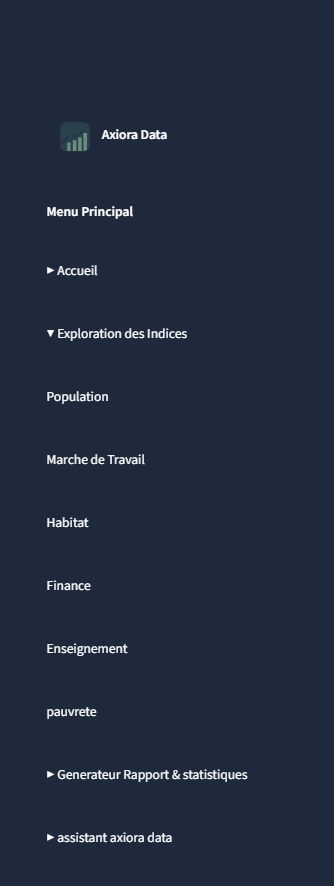
Collapsible indicator menu
Six domains, each with several indicators, would make a flat sidebar unreadable.
An indices_open flag toggles a nested accordion instead, so adding a
module costs one entry rather than a redesign.
Three-zone analysis layout
Each analysis view is split into controls, chart, and the underlying table. Keeping the data visible next to its visualisation lets a reader check a value directly instead of estimating it from a colour scale, which matters when the figures are official statistics.
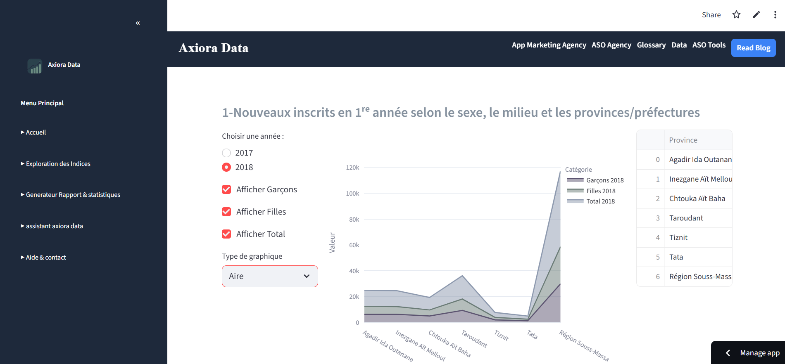
Show code
import streamlit as st
col_filters, col_chart, col_table = st.columns([0.95, 2.2, 1.0], gap="large")
with col_filters:
year = st.radio("Choisir une année :", [2017, 2018], index=1)
show_g = st.checkbox("Afficher Garçons", value=True)
show_f = st.checkbox("Afficher Filles", value=True)
show_total = st.checkbox("Afficher Total", value=True)
chart_type = st.selectbox("Type de graphique", ["Aire", "Barres", "Ligne"])
with col_chart:
# plotly chart (mise à jour en temps réel)
fig = build_figure(df, year, show_g, show_f, show_total, chart_type)
st.plotly_chart(fig, use_container_width=True)
with col_table:
st.dataframe(df_filtered, use_container_width=True)
Reusable components
A top bar and a set of KPI cards, injected as HTML with dedicated CSS, give every module the same visual anchors: which territory, which year, which indicator.
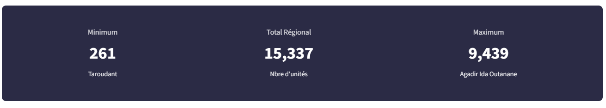
Show code
import streamlit as st
min_value = df_kpi["Valeur"].min()
max_value = df_kpi["Valeur"].max()
total_value = df_kpi["Valeur"].sum()
min_region = df_kpi.loc[df_kpi["Valeur"].idxmin(), "Province"]
max_region = df_kpi.loc[df_kpi["Valeur"].idxmax(), "Province"]
st.markdown(f"""
<style>
.kpi-wrap{{ display:flex; gap:16px; justify-content:space-between; }}
.kpi{{
flex:1; padding:18px 16px; border-radius:16px;
background: linear-gradient(180deg, rgba(255,255,255,.06), rgba(255,255,255,.03));
border:1px solid rgba(255,255,255,.12);
}}
.kpi h4{{ margin:0; opacity:.8; font-weight:700; font-size:14px; }}
.kpi .value{{ font-size:30px; font-weight:900; margin-top:6px; }}
.kpi .sub{{ opacity:.75; margin-top:2px; font-size:13px; }}
</style>
<div class="kpi-wrap">
<div class="kpi">
<h4>Minimum</h4>
<div class="value">{min_value:,.0f}</div>
<div class="sub">{min_region}</div>
</div>
<div class="kpi">
<h4>Total Régional</h4>
<div class="value">{total_value:,.0f}</div>
<div class="sub">Calculé depuis les données filtrées</div>
</div>
<div class="kpi">
<h4>Maximum</h4>
<div class="value">{max_value:,.0f}</div>
<div class="sub">{max_region}</div>
</div>
</div>
""", unsafe_allow_html=True)
Indicator modules
Population
The question this module addresses is where demographic pressure is concentrating, using the inter-census evolution from 2004 to 2014 and the shift in age structure.
Rather than a standard grouped bar chart, the two census years are drawn as a mirrored area chart: 2004 above the axis, 2014 below it as negative values. The comparison becomes a single shape to read instead of two series to align mentally.
Show code
import plotly.graph_objects as go
def area_miroir(df):
x = df["Province"]
y_2004 = df["RGPH 2004 – Urbain"]
y_2014 = df["RGPH 2014 – Urbain"]
fig = go.Figure()
fig.add_trace(go.Scatter(
x=x, y=y_2014,
mode="lines",
fill="tozeroy",
name="2014 Urbain"
))
fig.add_trace(go.Scatter(
x=x, y=[-v for v in y_2004],
mode="lines",
fill="tozeroy",
name="2004 Urbain"
))
fig.update_layout(
title="Area miroir — Urbain 2004 vs 2014",
xaxis_title="Provinces",
yaxis_title="Population",
hovermode="x unified"
)
return fig
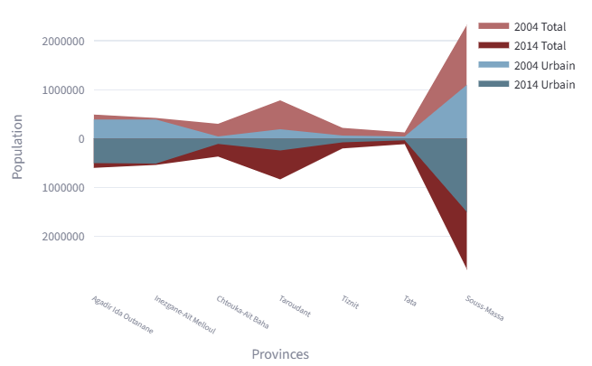
The region splits into two distinct planning problems: dense urban concentration along the coast around Agadir, and wide rural dispersion in Tata and Taroudant. Infrastructure needs in one are not comparable to the other.
Labour market
Averages hide the structure that matters here. This module separates participation by sex and by urban or rural setting, so that gaps rather than levels become visible.
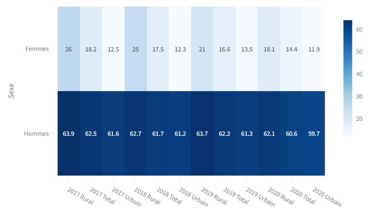
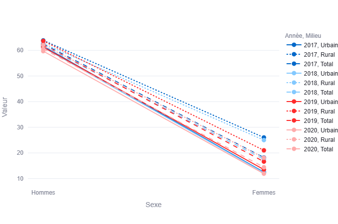
The heatmap reads the gap between male and female participation over time; the second view shows how that gap differs between urban and rural territories. Male participation remains substantially higher across the whole period, and the urban/rural split separates two different sets of constraints: access to employment, mobility, and locally available opportunities.
Housing
Housing indicators are a direct proxy for urban pressure and for how well a territory is equipped. The distribution view is used to find outliers rather than central tendency.
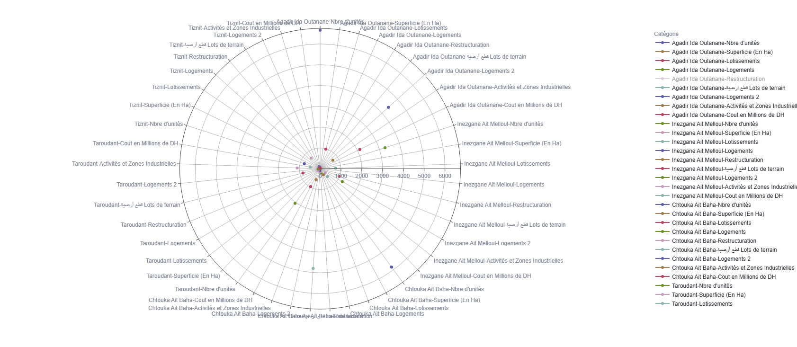
Spread indicates inequality between territories; isolated points usually mark rapid urbanisation or a specific development project. Both are more useful for prioritisation than the regional average.
Show code
import plotly.express as px
import pandas as pd
import streamlit as st
def render_habitat(df_habitat):
st.subheader("Habitat & Infrastructure")
fig = px.box(
df_habitat,
x="Classe_Annee",
y="Effectifs",
color="Classe_Annee",
points="outliers",
title="Distribution des indicateurs Habitat (2017–2018)"
)
fig.update_layout(
template="plotly_white",
title_x=0.5,
xaxis_title="Classe / Année",
yaxis_title="Effectifs"
)
st.plotly_chart(fig, use_container_width=True)
Local economy
This module compares the sectoral structure of Souss-Massa against the national figures, to see where the region diverges.
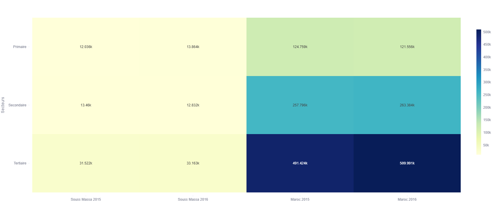
Show code
import plotly.express as px
import pandas as pd
import streamlit as st
def render_finance(df_finance):
st.subheader("Finance & Économie locale")
fig = px.imshow(
df_finance,
text_auto=True,
color_continuous_scale="YlGnBu",
aspect="auto",
title="Structure sectorielle — Souss-Massa vs Maroc"
)
fig.update_layout(
template="plotly_white",
title_x=0.5,
xaxis_title="Territoire / Année",
yaxis_title="Secteurs"
)
st.plotly_chart(fig, use_container_width=True)
Education
A multi-indicator profile comparing provinces on several education measures at once, which surfaces territories with a consistent deficit rather than a single weak figure.
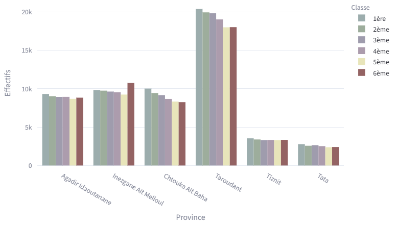
Show code
import plotly.graph_objects as go
import streamlit as st
def render_enseignement(categories, values_dict):
st.subheader("Enseignement & Capital Humain")
fig = go.Figure()
for province, values in values_dict.items():
fig.add_trace(go.Scatterpolar(
r=values,
theta=categories,
fill='toself',
name=province
))
fig.update_layout(
polar=dict(
radialaxis=dict(visible=True)
),
showlegend=True,
title="Profil multi-indicateurs — Comparaison territoriale"
)
st.plotly_chart(fig, use_container_width=True)
Geographic mapping
The maps join two datasets that were never designed to be joined: the HCP tables
name a territory as the publication writes it, and the official boundary
shapefiles (ADM2_FR for provinces, ADM3_FR for communes)
use their own spelling.
Reconciling names
| Name in the HCP table | Name in the shapefile | Poverty 2014 (%) |
|---|---|---|
| Agadir (M) | Agadir | 0.39 |
| Biougra (M) | Biougra | 1.02 |
| Aqsri | Aqesri | 4.30 |
| Belfaa Centre (AC) | (part of Belfaa) | 1.55 |
| Taroudant (province) | Taroudannt | |
| Inezgane Aït Melloul (province) | Inezgane Ait Melloul |
For communes, the key is built on both sides by lowercasing and removing the
(M) suffix, hyphens and apostrophes; the few names that still differ
are mapped explicitly. For provinces there are only six names, so each spelling
used in the tables is mapped by hand to the shapefile name.
What went wrong, and how it is checked now
The join is an inner join, so a name that does not match is dropped without any message: the map simply has one territory fewer. Problems of that kind were in the app until every name was compared with the shapefile:
- Inezgane-Aït Melloul was never on a province map. The mapping sent it to
Inezgane-Ait Melloul; the shapefile writesInezgane Ait Melloul, without the hyphen. The prefecture was silently dropped from the population, housing, finance and education maps, and from nothing else, so the regional totals beside the maps still looked complete. - Chtouka-Aït Baha missing from one map. The four map modules each had their own copy of the name mapping, and the population module's copy lacked one spelling used in the 2018 tables. The modules now share a single mapping, and
validate_data.pyfails if any province name in the data does not reach a polygon. - Two values on one polygon. Communes and their urban centres
(AC)are separate rows in the HCP poverty tables, but a centre has no polygon of its own. Mapping the centre to its commune's polygon drew two values on the same shape. Centres are now left out of the map, which shows commune rates only. - A mean presented as a regional rate. The middle figure above the commune map was labelled "Moyenne Régionale"; it is an unweighted mean of commune rates, so a commune of 2,000 people counts as much as Agadir. It is now labelled as such.
The commune map also had six blank communes: the Inezgane-Aït Melloul prefecture had no poverty data at all. Its rates were added from the HCP sheet for the prefecture.
Choropleth rendering
Once the keys match, GeoPandas merges the statistical DataFrame with the GeoDataFrame and Plotly renders the result, colour intensity mapping to the selected indicator.
Show code
province_name_mapping = {
'Agadir Ida Outanane': 'Agadir Ida Ou Tanane',
'Chtouka Ait Baha': 'Chtouka- Ait Baha',
'Inezgane Ait Melloul': 'Inezgane Ait Melloul',
'Taroudant': 'Taroudannt'
}
df_filtre['join_key'] = df_filtre['Province'].replace(province_name_mapping)
gdf_provinces['join_key'] = gdf_provinces['ADM2_FR']
# inner join: an unmatched name disappears from the map, hence validate_data.py
gdf_merged = gdf_provinces.merge(df_filtre, on='join_key', how='inner')
fig_map = px.choropleth_mapbox(
gdf_merged,
geojson=gdf_merged.geometry,
locations=gdf_merged.index,
color="Valeur",
hover_name="Province",
)
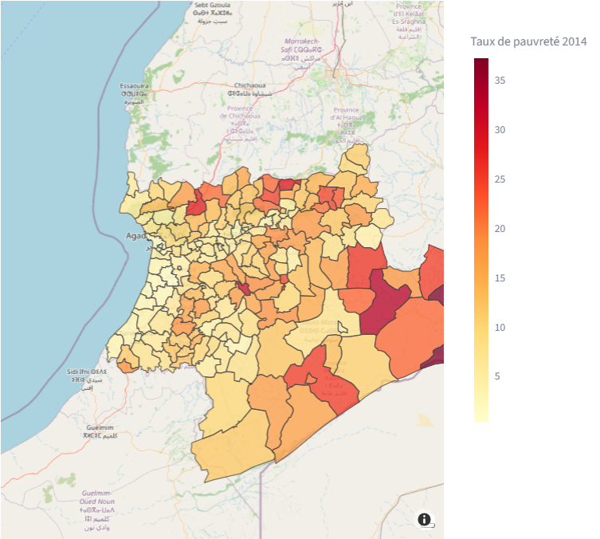
Interaction
- Tooltips: hovering a territory shows its name and exact value, so a reader never has to infer a number from a colour scale.
- Framing: the view is pre-centred on Souss-Massa at a zoom level that fits the region on load.
- Filtering: changing the year or indicator recomputes the join and redraws the map with a colour scale rescaled to the filtered data.
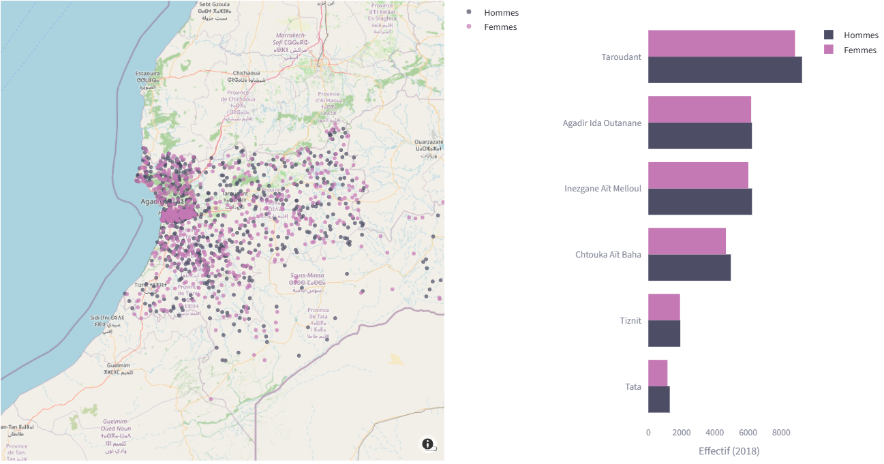
Trend projection
The exploration modules describe what has happened. This module extrapolates the observed trend forward, so that a reader can see the direction and rough magnitude of change rather than only its current level.
Why linear regression
The choice is dictated by the data, not by preference. Census indicators are published roughly every ten years, and the annual series rarely exceed six points. On series that short, a flexible model fits noise and produces projections that look confident and mean nothing.
- Sample size: a handful of temporal observations cannot support a model with many parameters
- Interpretability: a slope coefficient can be stated plainly: this indicator changes by x per year over the observed period
- Inertia: demographic quantities move slowly, so a linear trend is a defensible first approximation
How it is implemented
- Reshaping: each series is reshaped with
pd.meltso that the year becomes an explicit independent variable and the indicator the target. - Fitting: one
LinearRegressionper territory, fitted on the full observed series. - Extrapolation: the fitted line is evaluated at the next three years and appended to the observed series for display.
df_melt = df.melt(
id_vars="Province", value_vars=cols,
var_name="Année", value_name=selected_indicator
)
df_melt["Année"] = df_melt["Année"].str.extract(r"(\d{4})").astype(int)
predictions = []
for prov in df["Province"]:
sub = df_melt[df_melt["Province"] == prov]
X = sub["Année"].values.reshape(-1, 1)
y = sub[selected_indicator].values
model = LinearRegression().fit(X, y)
future_years = np.array([2019, 2020, 2021]).reshape(-1, 1)
y_pred = model.predict(future_years)
for yr, val in zip([2019, 2020, 2021], y_pred):
predictions.append({"Province": prov, "Année": yr,
selected_indicator: val})The model is fitted on every available observation and extrapolated forward. There is no held-out split and no error metric: with series of four to six points (and, for the inter-census indicators, only two), there are not enough observations to hold any back and still fit a line. This is stated plainly below rather than implied, because it determines how much weight these curves can carry.
What the projections show
Each view plots observed values against fitted and projected values, so the gap between the two is visible rather than hidden behind a single extrapolated line.
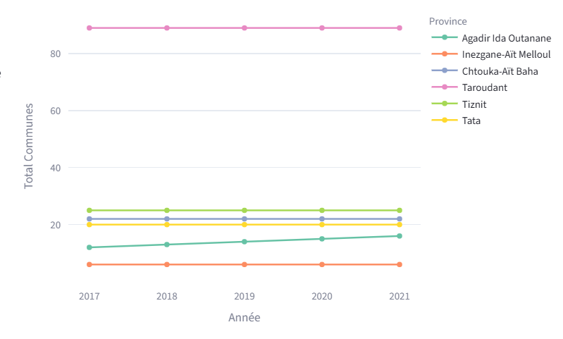
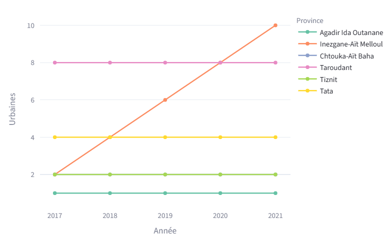
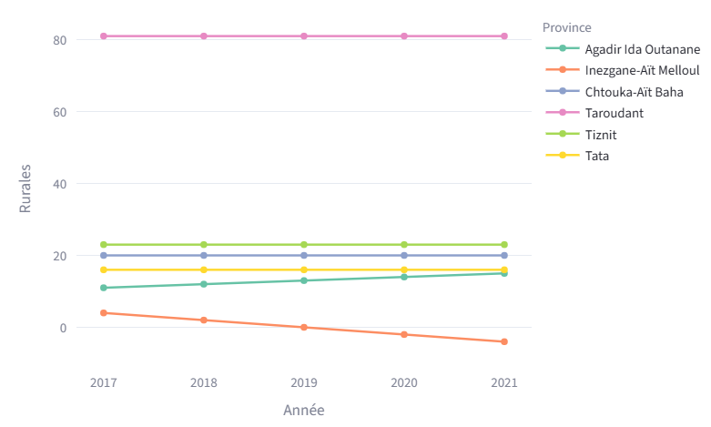
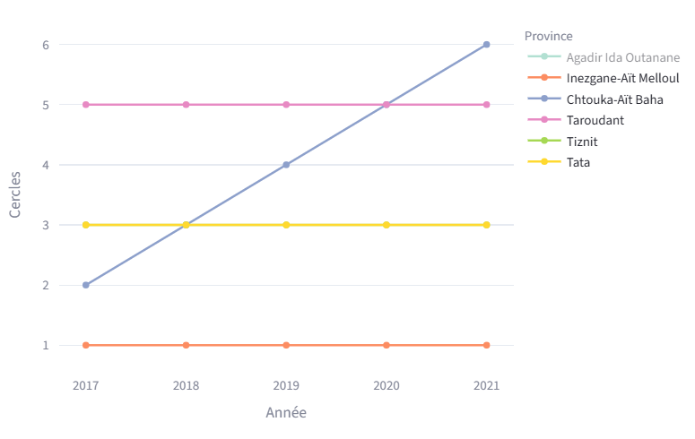
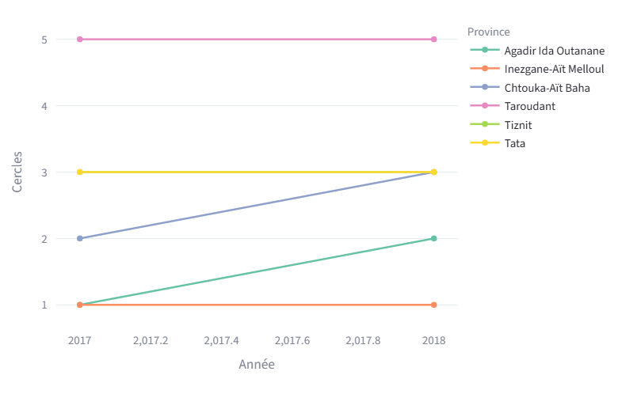
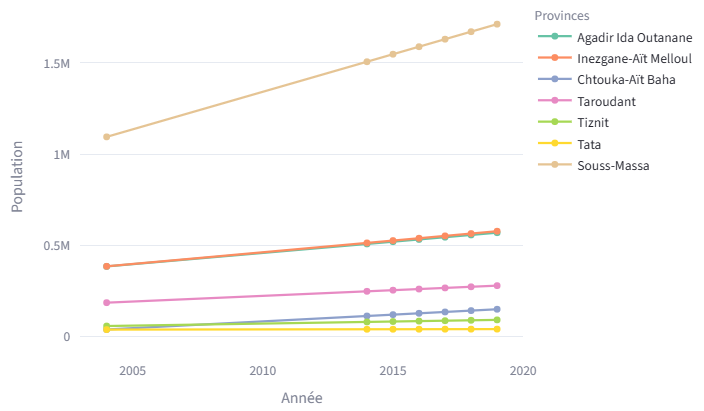
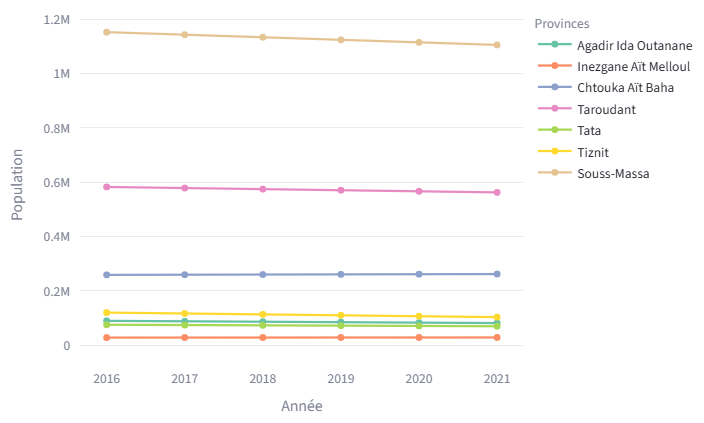
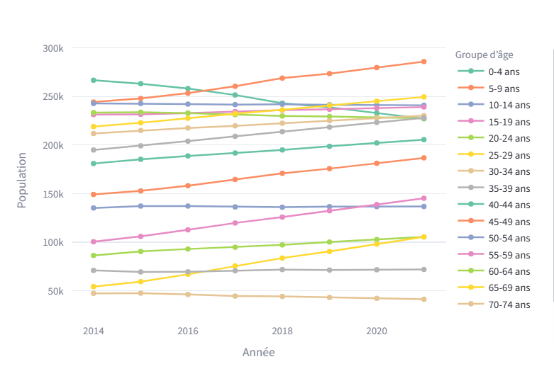
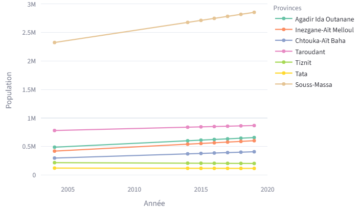
Read together, the total, urban and rural trajectories show concentration rather than uniform growth: some provinces absorb increase faster than others, which translates into pressure on housing, mobility and public facilities in those territories specifically.
Limitations
These curves extrapolate an observed trend. They are not forecasts in the statistical sense, and the following constraints apply to every figure this module produces:
- No out-of-sample evaluation. The regression is fitted on the complete series and extrapolated; no portion is held back, so no error metric is reported. The fit quality shown on the charts is in-sample by construction.
- Very short series. Most indicators offer four to six temporal points. Two of the demographic series rest on the 2004 and 2014 censuses alone: two points, through which a straight line passes exactly, leaving no residual and no way to judge the fit.
- No structural change modelled. A linear fit assumes the mechanism producing the trend continues unchanged. It cannot represent a policy shift, an economic shock, or a change in census methodology.
- Univariate. Each indicator is projected from its own history alone. No exogenous variable (climate, public investment, migration) enters the model.
- No uncertainty displayed. The charts show a single line. Confidence intervals on a regression fitted to so few points would be wide, and are not drawn.
This module is intended to make the direction of an observed trend legible. It is not an evaluated predictive model, and its output should not be used on its own as the basis for a planning decision.
Possible extensions
- A real evaluation. Holding out the last points and reporting the error needs longer series than any the app holds today; it is the missing piece, and depends on adding data first.
- Multivariate models. Composite indicators such as poverty depend on several measured quantities; a gradient-boosted model over multiple features would fit that structure better than a univariate line.
- Exogenous variables. Adding geospatial or external data (climate, public investment programmes) as features, provided enough observations exist to justify the added parameters.
Question answering assistant
Charts have a limit: they answer the question they were designed for. A reader who wants a specific figure, or a comparison nobody anticipated, has to hunt for it. The assistant exists to close that gap, not as a general-purpose chatbot, but as a module restricted to the loaded dataset.
How it is constrained
Every request sends the indicator dictionary from hcpdata.py to the
model as context, together with a prompt instructing it to answer only from that
context and to say so when a figure is not there.
Grounding only moves the problem to the data. When a table in the context is wrong, the model reports the wrong figure with the same confidence as a right one. Asked for Drargua's poverty rate in 2014, the assistant answered 26.2 %, the figure in the table, while the HCP figure is 8.86 %. While the four broken tables were being re-entered, they were kept out of the context rather than sent as they were. The prompt also used to tell the model that the values were in thousands, which was false for most of them; that line was corrected.
Grounding the model in a fixed dataset substantially reduces the risk of invented figures, because the correct values are present in the prompt and the model is instructed not to go beyond them. It does not eliminate it: a language model can still misread a nested structure or mis-attribute a value, and answers on consequential figures should be checked against the tables, which the interface displays alongside every chart for exactly this reason.
Show code
genai.configure(api_key=st.secrets["GEMINI_API_KEY"])
model = genai.GenerativeModel('gemini-2.5-flash')
def donnees_pour_assistant():
# every table passes validate_data.py; a table that fails is removed here
return hcp_data
def response_to_query(query):
data_json = json.dumps(donnees_pour_assistant(), indent=2, ensure_ascii=False)
prompt = f"""
Tu es un assistant expert en données statistiques du HCP.
Si la question porte sur des données chiffrées, réponds UNIQUEMENT à partir
des données suivantes. [...] Si la donnée demandée n'y figure pas, dis-le
au lieu de l'estimer.
Données HCP :
{data_json}
[...]
"""
return model.generate_content(prompt).text
Question types
Direct lookup
"What was the poverty rate in Drargua in 2014?"
The model locates the value in the injected structure and returns it.
Comparison
"Which three provinces have the highest urban unemployment?"
Values are compared and ranked across the relevant table.
Summary
"Summarise rural housing conditions in Tata in three points."
Several columns are aggregated into a short written synthesis.
Conversation handling
- History: exchanges are stored in
st.session_state, so follow-up questions ("and how did that change since 2004?") resolve against the previous turn. - Formatting: the system prompt asks for Markdown, which Streamlit renders natively as tables and lists rather than a wall of text.
Automated PDF reporting
An analysis that cannot be circulated has limited use in an administrative setting. This module turns a selected dataset into a formatted PDF document, assembled without manual editing.
Report contents
- Descriptive statistics: mean, standard deviation and quartiles computed per numeric column, with top and bottom ten rankings to expose disparity between localities.
- Charts: Plotly and Matplotlib figures exported as images and embedded in the document flow.
- Structure: a generated table of contents, automatic pagination, and section headings, built by extending the
FPDFclass with custom header, footer and TOC handling.
Export
- Encoding: latin-1 handling so French text and locality names render correctly.
- Naming: files are named
Title_Date.pdfautomatically, which keeps successive exports sortable. - Delivery:
st.download_buttonstreams the in-memory buffer straight to the browser, with no server-side storage.
Outcome
The platform is deployed and publicly accessible. It brings HCP tables for six domains into a single interface where an indicator can be filtered, mapped, compared and extrapolated without reopening a publication.
The interface and the maps were the bulk of the work. The data was the weak point, and I only saw it once the tables were checked against their own totals.
What I would do differently
Check the data before building on it. Every error the validation script found was of a kind that does not crash anything: a shifted column, a swapped pair of years, a name one hyphen away from the shapefile, a 0 standing for "not published". The app showed each of them as a plausible number. The check costs a few dozen lines because HCP tables carry their own totals, and it should have been the first thing written, not the last. With it in place, I would also replace hand transcription with a script that reads the HCP files directly, so that a table is entered once and checked every time.
The forecasting module is the other weak part of the project, and knowingly so. It extrapolates without evaluating, because the series are too short to hold anything back, but the interface presents the result as a curve like any other, which overstates it. Revisiting it, I would restructure the data to obtain longer series where possible, hold out a genuine test portion on those, report the resulting error next to each projection, and mark the two-point census series as extrapolation only.
Next steps
- Check the remaining tables against their source. The poverty tables have been compared with the HCP sheets value by value; the population, labour, housing and finance tables pass their totals but have not been compared with the publications cell by cell.
- 2024 census integration. Load the new demographic and socio-economic indicators as HCP publishes them, extending every series by one census point.
- Forecasting. Move to seasonal and multivariate models where series length allows, and surface uncertainty in the interface.
- Deployment. Containerise the application with Docker for institutional servers, and add a caching layer for larger data volumes.